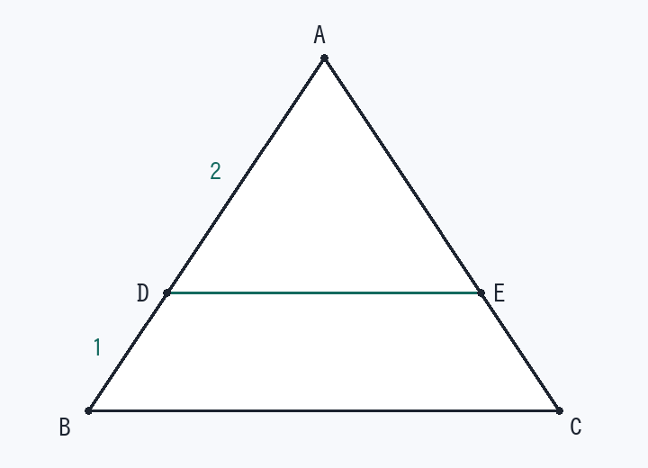

第7回 相似の面積比は「辺の比の2乗」
三角形 ABC の辺 AB 上に点 D、辺 AC 上に点 E をとる。DE ∥ BC、AD : DB = 2 : 1 のとき、△ADE と四角形 DBCE の面積の比を求めよ。

解法の型
辺の比 m : n → 面積の比 m² : n² ／ 四角形 = 大きい△ − 小さい△
平行線を見たら相似。まず相似な2つの三角形を見つけます。
解答手順
- 相似を見つけるDE ∥ BC ＋ ∠A 共通 → △ADE ∽ △ABC
同位角が等しく、∠A は共通なので2角相等。
- 比を「全体」に直すAD : DB = 2 : 1 → AD : AB = 2 : 3
ここを 2 : 1 のまま使うのが最大のミスです。
- 2乗して面積比△ADE : △ABC = 2² : 3² = 4 : 9
- 四角形は引き算四角形DBCE = 9 − 4 = 5△ADE : 四角形DBCE = 4 : 5
検算：BC = 3、高さ 3 とすると △ABC = 4.5、DE = 2・高さ 2 で △ADE = 2。2 : (4.5 − 2) = 2 : 2.5 = 4 : 5 で一致します。
覚えるべきこと（在庫に入れる1行）
平行 → 相似 → 比を2乗 → 四角形は引き算
類題（翌日、何も見ずに）
- AD : DB = 1 : 2 のときの △ADE : 四角形DBCE
答え
AD : AB = 1 : 3 → 1 : 9、四角形は 9 − 1 = 8 なので 1 : 8
- D, E が中点のときの △ADE : △ABC
答え
AD : AB = 1 : 2 → 1 : 4
- △ADE : 四角形DBCE = 9 : 16 のときの AD : DB
答え
△ADE : △ABC = 9 : 25 → AD : AB = 3 : 5 → AD : DB = 3 : 2